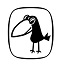

DİDEM MADAK
PULBİBER MAHALLESİ
İzmir doğumlu (1970-2011). Liseyi İzmir’de tamamladı. Dokuz Eylül Üniversitesi Hukuk Fakültesi’ni bitirdi. İlk şiirleri Sombahar ve Ludingirra dergilerinde yayımlandı, ilk kitabı Grapon Kâğıtları (2000) ile İnkılâp Kitabevi Şiir Ödülü’nü aldı. Sonraki yıllarda iki kitabı daha yayımlandı: "Ah"lar Ağacı (2002) ve Pulbiber Mahallesi (2007). 2008’de kızı Füsun dünyaya geldi. Şairin bu üç kitabının Metis’te yaptığımız tekrar basımları okurlardan geniş ilgi gördü.
